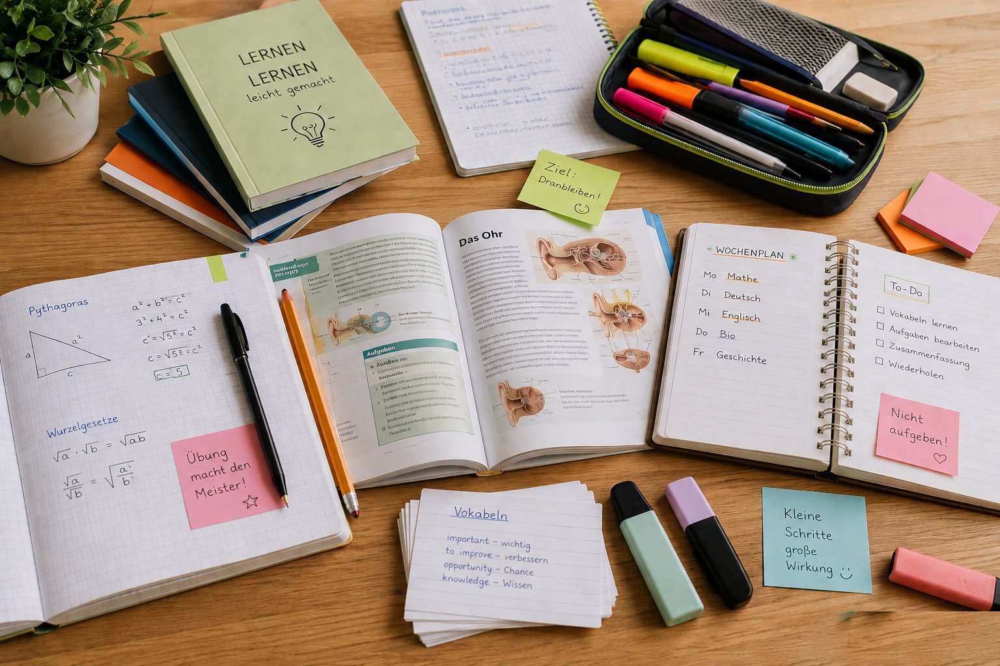

Ich weiß, wie ich anfangen soll.
Aufgaben ordnen, realistisch planen und Lernzeiten so gestalten, dass aus „Ich müsste“ ein konkreter nächster Schritt wird.
Wir helfen Schülern dabei, ihren eigenen Lernprozess zu verstehen, Struktur aufzubauen und zunehmend selbstständig zu lernen – mit Methoden, die im Alltag funktionieren.

Viele Schüler wissen, was sie lernen sollen. Schwieriger ist das Wie: anfangen, priorisieren, konzentriert bleiben, sinnvoll wiederholen und mit Prüfungsdruck umgehen. Genau dort setzt Rein Campus an.
Aufgaben ordnen, realistisch planen und Lernzeiten so gestalten, dass aus „Ich müsste“ ein konkreter nächster Schritt wird.
Aktives Abrufen, Wiederholen, Erklären und passende Lerntechniken statt stundenlangem Durchlesen.
Ablenkungen erkennen, Fokusphasen aufbauen und Pausen so nutzen, dass das Gehirn tatsächlich weiterarbeitet.
Prüfungssituationen, Selbstzweifel und Blockaden werden nicht weggeredet, sondern mit konkreten Strategien bearbeitet.
Gute Lernbegleitung macht Schritt für Schritt unabhängiger. Deshalb geben wir keine Patentrezepte vor, sondern bauen Verständnis, Routinen und eigene Handlungssicherheit auf.
Für die meisten Schüler ist der strukturierte Online-Kurs der beste Einstieg. Bei konkreten Blockaden gibt es zusätzlich individuelle Begleitung.
Der digitale Lernweg für Schüler, die Schritt für Schritt mehr Struktur, wirksame Lernmethoden und Eigenständigkeit entwickeln sollen.
Zur Kursseite →Für konkrete Lernprobleme oder Blockaden, in denen zusätzlich ein persönlicher Blick sinnvoll ist. In Kenzingen oder nach Absprache online.
Orientierung anfragen →Was läuft bereits gut? Wo hakt es tatsächlich? Wir trennen Symptom und Ursache.
Einzelbegleitung, Kurs oder Workshop – nicht jedes Problem braucht dieselbe Lösung.
Das Gelernte wird in den Schulalltag übertragen und dort Schritt für Schritt zur Routine.
Wir sagen Ihnen, welcher nächste Schritt sinnvoll sein kann – Kurs, Einzelbegleitung oder beides.